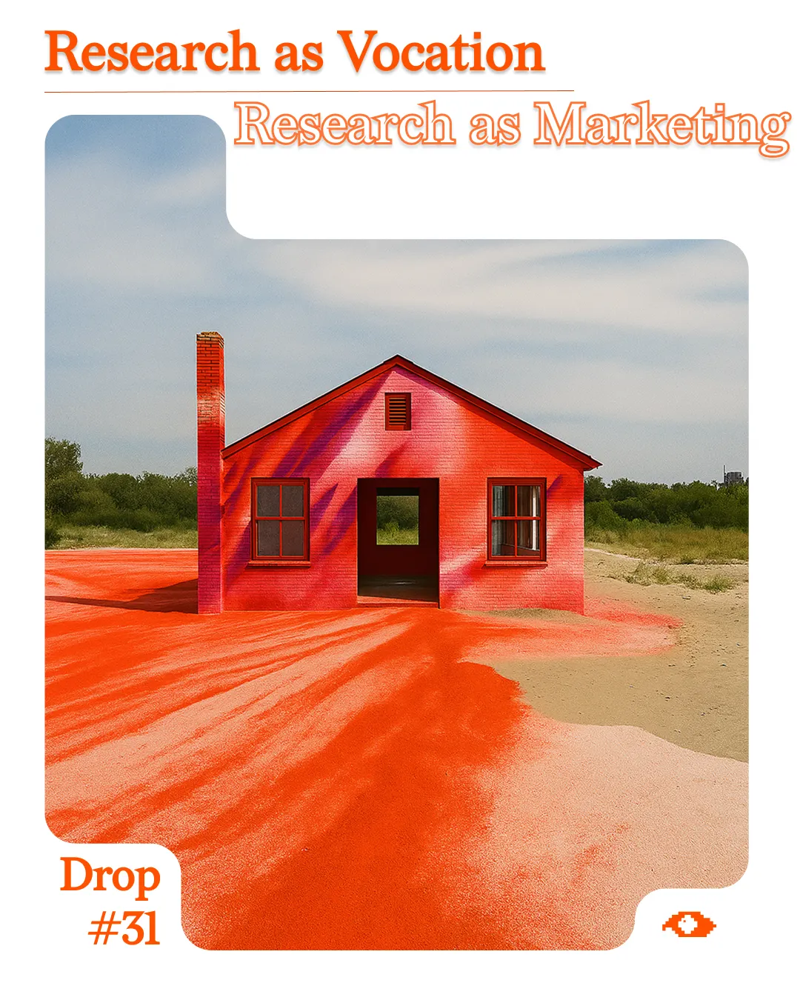
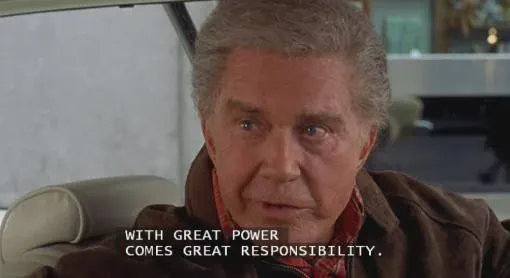
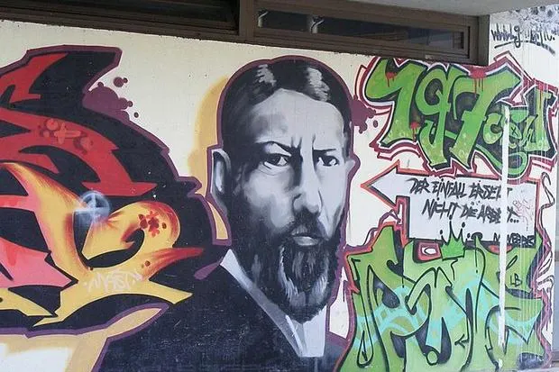
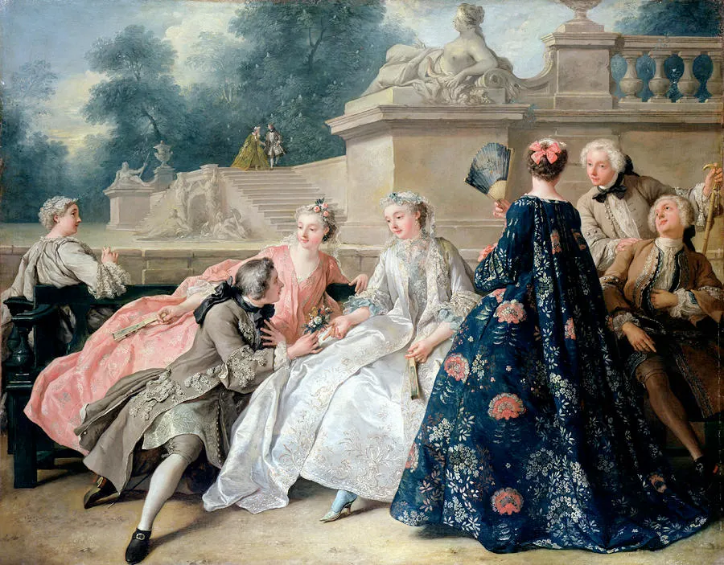
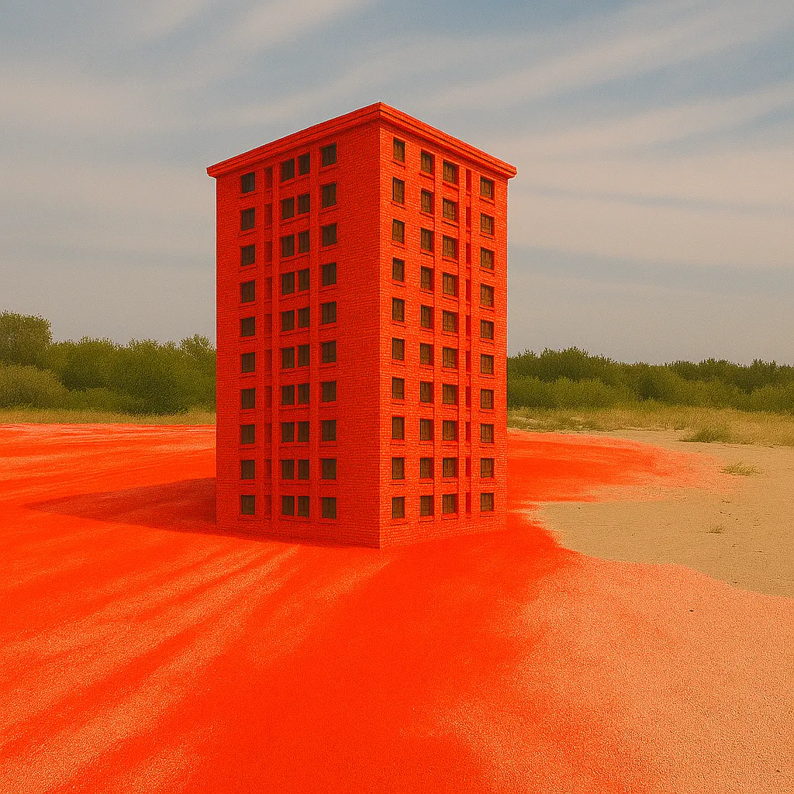
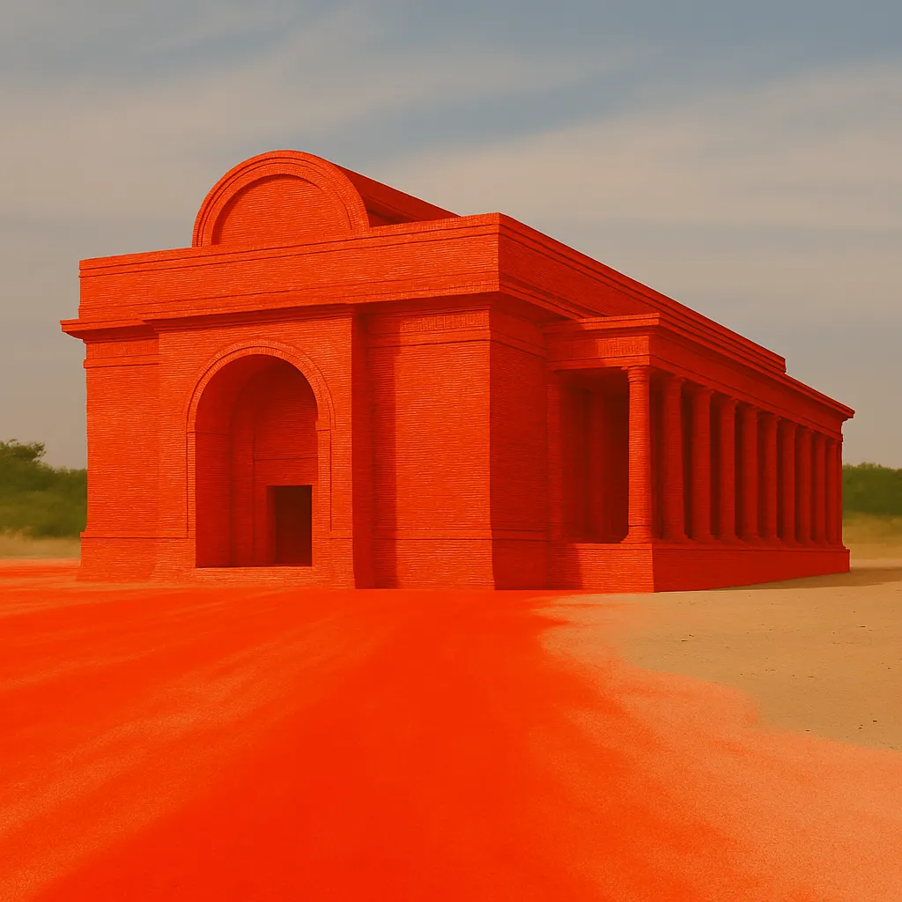
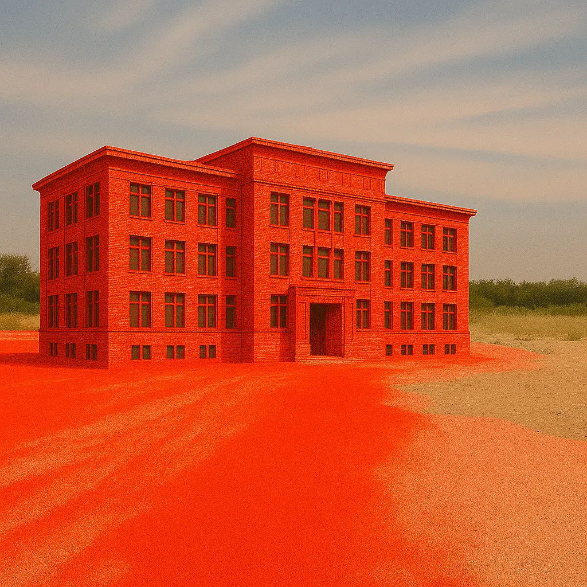
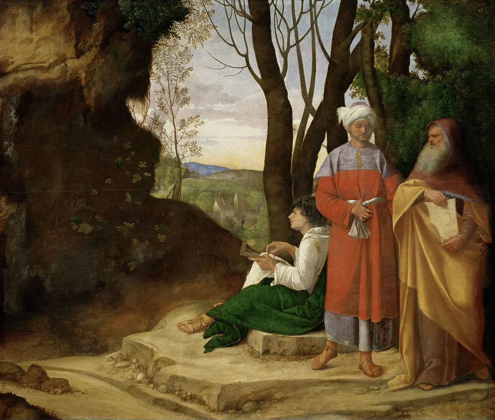
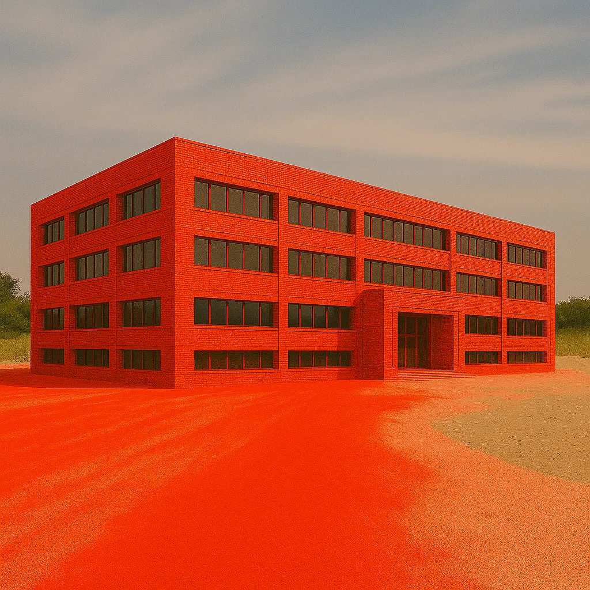
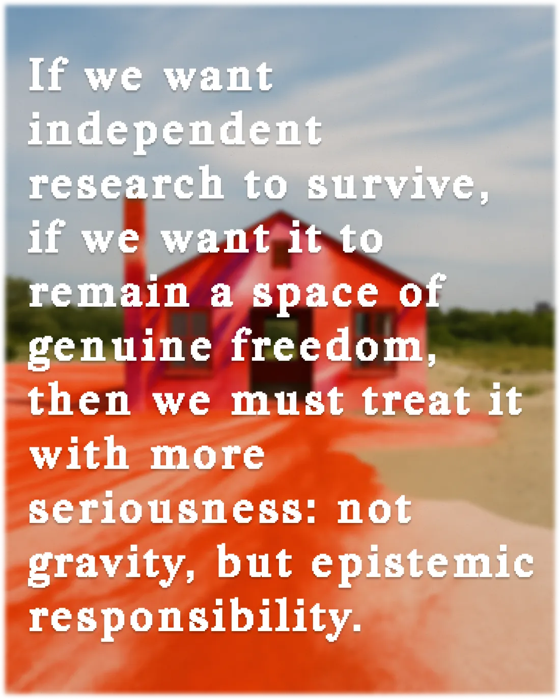

Drop #31 · April 11, 2025 · 25 min read
The tragic trajectory of independent cultural research
Hey everyone (▰˘◡˘▰)
Welcome back to DROPS, REINCANTAMENTO’s newsletter.
Drop #31 marks Marco Mattei’s debut on DROPS with an explosive j’accuse directed against the cultural industry and the role of the independent researcher in the current landscape. Marco dissect with surgical witt the hypocrisies and the unspoken issues surrounding the practice of research in academia, in the art world, and in the online cultural sphere. Marco speaks mostly about the Italian scene but its idiosyncracies are valid for other Western countries. Finally, Marco links this polemic with the dialectics of disenchantment and re-enchantment that often we mobilize, as a speculative engine, in this publication.
Marco Mattei is a PhD student in Experimental Social Psychology. He authored “Invito al Reincantamento” (TLON, 2024) and he is a founding member of REINCANTAMENTO. Also interested in optimism, and research as art.

A little over a year ago, my first book, Invitation to Re-enchantment (Invito al Reincantamento), was published. I don't think it was very successful, and in any case I'm not losing sleep over it. Still, after five years of writing for online cultural magazines, it was a moment of reflection not only on the theme of disenchantment itself, but more generally an opportunity to reflect on the meaning of independent research. The outcome of this reflection is precisely why I decided to stop writing altogether, at least in the circuit of independent and non-independent cultural publishing, and why this article now exists here. But I don't want to anticipate too much.
Those who write fiction are accustomed to asking themselves what it means to write. For some reason, I think this question is still uncommon among those who deal with non-fiction, even more so among those who deal with online non-fiction, both in those cultural magazines of which I too have been a part, and those who do it in their own, personal spaces like this one. In general, my bubble seems to be full of independent researchers, it seems to me that everyone defines themselves as such, and nowadays this expression is so inflated that it has lost meaning. The boundaries between cultural journalism, popularization, personal interest, and nonsense seem to be thinning for the worse, especially in a context where the visibility these activities can bring can be a source of personal branding and therefore social capital, reputational capital, and economic capital, without necessarily being accompanied by greater authority or accountability of the person in question. It seems to me, in short, that contrary to what Uncle Ben said, great powers do not always come with great responsibilities.

Recently, I happened to read a couple of books written by relatively well-known people in the Italian "independent" cultural publishing scene more or less close to me, whom I will avoid mentioning explicitly out of politeness. I found them so full of nonsense, falsehoods, and banalities that I was driven to ask myself:
What is the point of writing about philosophical or cultural themes independently today? And what does it mean, concretely, to do this type of writing? Is it cultural journalism, speculative research, popularization, or something else entirely?
It also seems that cultural publishing, both "independent" and non-independent, encourages these types of ambiguity because, for publishers, this means larger profits, and even better if they can do it while pretending to "create culture." That's why I decided to get out of it as soon as possible: I was a bit uncomfortable. I don't want to suggest that everyone is acting in bad faith, but I firmly believe that some cultural marketing mechanisms implemented by social media make the intention behind them irrelevant. Therefore, in this text that could not be published elsewhere, I would like to share some of my scattered reflections on what it means to do research, what it means to do it independently, what all this has to do with re-enchantment, and what the dangers of cultural publishing are.
Let's start with re-enchantment for a moment. To make it brief: in 1919, the German sociologist Max Weber gave a series of lectures that would later be published under the title Wissenschaft als Beruf, "Science as a Profession/Vocation." In this text, the term Entzauberung [der Welt] was introduced for the first time, which would later be translated as "disenchantment." Usually, in works that deal with this topic, Weberian disenchantment is presented more or less like this: technological progress and scientific rationality have torn us away from a magical and enchanted vision of the world, thus delivering us to a mechanistic world, devoid of a truly sacred space for human beings, resulting in a general spiritual crisis.

Well, the book I wrote had the sole purpose of demonstrating that this vision of disenchantment is wrong: both in the sense that Weber did not say this, and in the sense that, even if Weber had said this, this phenomenon would still be false. To summarize as much as possible—so you don't have to buy my book and can therefore continue reading this article: Weber is not as naive as this reconstruction presents him. The Weberian point primarily concerns (and, I would add, exclusively) how "science as a vocation". i.e., academic research, is politically, legislatively, and economically reformed at the beginning of the 20th Century.
Weber says that the progressive transformation of universities from places of knowledge to places of profit has consequently transformed research from a vocation, "All men by nature desire to know". writes Aristotle, identifying wonder and curiosity as the essence of the human spirit—to a profession, something that is done not because it fulfills the inner nature of human beings, but because it must bring a profit. In the university, Weber writes, this change in perspective transforms scientific research into mere technological research. In other words, through this process, legitimacy has been taken away from knowledge in general, to give value only to that type of knowledge that is not only immediately practical, but above all immediately applicable to generate a profit: technical knowledge.
No need to invoke supernatural or magical elements. In this, perhaps the term "disenchantment," in Italian, causes a misunderstanding, but its etymology and the context in which it appears in the Weberian text leave no room for doubt. The expression disenchantment—in German Entzauberung—is to be understood as a loss of Zaubern, that is, of charm, of the world. This charm has nothing animistic or magical about it: it is, again, the charm that the scholar feels for the world, in the sense of the charm of research, the charm of knowledge, of finding answers to one's questions—and thus precisely the charm of science, of rationality (hence the otherwise inexplicable title of the lecture: "Science as a Vocation"). Charm that was lost the moment pure knowledge no longer had value, as from that moment on it was worth pursuing only those forms of science that brought economic utility. Therefore, says Weber, following this change in perspective, one of the quintessential human activities, curiosity, the desire to know, no longer has a reason to be pursued. This is Weberian disenchantment: the transformation of a place, and consequently of an activity central to human well-being, into a place (and therefore an activity) for generating profits, pace Federici, Campagna, Taussig, De Martino, etc., who completely miss the point of disenchantment reflection, proposing a return to magical or spiritual visions that are therefore invalid. End of summary.
Why have I told you this story? Because hidden here is the answer to the question about the meaning of doing independent research. What Weber called "science" but what we call research, can be divided in two general kinds: research as science, and research as art; and each of these two can be pursued in two ways: as a profession or as a leisure activity. What does it mean, and what is the value of doing research as a profession, that is, academic research? Similarly, what does it mean today to do research as a leisure activity? And as an art? Addressing these questions through the lens of re-enchantment can be illuminating. Let me start gently.
On the meaning and value of independent research, I have read two very interesting articles: "Research as a leisure activity" by Celine Nguyen and "An invitation to a secret society" by Adam Mastroianni. Both texts explore the concept of research as a "leisure activity", that is, research as a hobby, amateur or dilettante research in the proper sense, that is, for pleasure. In their view, research as a "leisure activity" is characterized by a free, anti-disciplinary, and flexible personal approach, which ignores some sterile, bureaucratic, and methodological formalities of academic research while maintaining a strong ethical and intellectual commitment to "data," whatever they may be, and to truth. This type of research, the authors say, is that carried out by artists, writers, cultural critics, and self-taught people, people who often combine their personal interests with the production of content, such as articles, works of art, or online archives, published in independent cultural magazines, museums, non-academic publishing houses, and so on. The nerve center of Nguyen's and Mastroianni's arguments is how this form of free and non-institutionalized research is fundamental to enriching human knowledge and promoting creativity and personal and social well-being.

One thing that both articles lack, however, is a definition of research. By focusing on the distinction between independent and professional research, the authors take for granted that the general public knows what it means to do research. Instead, I think the ambiguity that swarms in cultural publishing is to be attributed to an upstream ignorance of what distinguishes research from non-research, not independent research from professional research.
So, what is research? In a very naive and superficial sense, the expression "doing research" is to be taken literally: it means looking for information about something. I would like to know who Kenelm Digby is or who monsieur 'Ndoye is, and so I open the internet, go to a library, ask a friend, and look for information about these two people until I find answers, which in this case would be, respectively, an English pirate who wrote a philosophical treatise on cocktails and the captain of the 2021/2022 season of Red Star, a football team from Saint Ouain, a small town in the northern suburbs of Paris. In this purely grammatical sense, then, we have all been or will be researchers at some point.
In a more sophisticated sense, however, "researcher" implies an ellipsis: those who do research are not looking for information that they do not have—the right expression for this is, in fact, "studying" or "student"—but are looking for information that no one knows, that is, researching knowledge that does not yet exist. In this sense, the term "research" can also be misleading: one is not, in fact, researching knowledge but creating it. Research produces information, it does not consume it. The purpose of research is the creation of new knowledge and new understandings. This purpose is also and above all noted by the fact that, regardless of whether it is professional, amateur, or artistic, the results of research are always objectified in a public document: an article, a book, an exhibition, a thesis, in which the results are presented. Note: it is certainly not the result that makes research genuinely such. I know this well, since a large part of experimental psychology research leads nowhere. But the point of purpose remains: whether it succeeds or not, research aims to generate new knowledge.

Now what counts as "knowing" is often socially determined. Since God does not exist, and therefore, we cannot ask him to confirm or deny once and for all the things we believe we know, the best way we have to determine the goodness of research is often through adherence to certain standardized, shared procedures and methodologies, which the community that participates in that research imposes on itself.
This is the case, for example, of the imperfect but necessary peer review in academia. Professional researchers are not free to disseminate the results of their research in the means and ways they prefer: they are generally obliged to write the results of their work in highly formulaic and standardized articles, which will then be sent to specialized journals in that field, which will have them read by 2-3-4-5 experts in the subject who will have to deliberate whether the methods of that research conform to the best standards currently accepted by that discipline, and if so, the article will be published in a sector journal.
This is where I want to point out the first thing: research as a science, practiced as a profession, does not mean research as practiced in universities. In the way I intend to use the word "professional," one can do independent scientific professional research. Professional research is research that refers to the standards of the community that paradigmatically does research professionally: the university.
Doing professional research therefore means respecting academic standards, in ways and means. This obviously requires large amounts of two things: time and money. A few months ago, the principal investigator of the research project I am part of decided to buy an electroencephalograph to allow me to complete the central experiment of my doctoral thesis. The EEG cost about 80 thousand euros. For this reason, therefore, most professional research is necessarily done in universities or research institutes. Of course, if I had been a millionaire, no one would have prevented me from buying it on my own, but unfortunately that is not the case.
Don’t be confused by the term “science”: the discussion I mentioned above did not refer solely to STEM disciplines, which understandably require tools inaccessible to the general public, but referred also and especially to humanistic research, specifically philosophical research. This requires no sophisticated equipment, so pragmatically speaking, good philosophical research is not the prerogative of academia.
Yet, as I said before, notwithstanding that professional research in general is not essentially linked to academia, it is tied to a type of "prudential" practice. We want to ensure that we can trust the outcomes of research, and that the money we use to finance it is not wasted. Anyone who has enough time and money can dedicate themselves to research professionally without having to be part of an "official" institution. Therefore, it is obvious that good philosophical research is not the prerogative of academia. Anyone can publish in a scientific journal, if they accept its practices.

On the other hand, good scientific research in general, is linked to the adaptation to a certain prudential standard of socially shared quality. First of all, for the respect of the discipline and the work. Doing research, again, requires time: reading what is published on the subject, staying updated, going to conferences... these are activities that require a lot of time, and that is why researchers often only do this. Amateur researchers, on the other hand, are forced—due to capitalist society, to do this in their free time, because to make a living, they need a job (which takes time). There is therefore no comparison between the two. And this, obviously, is not limited to humanistic disciplines: mathematics, artificial intelligence, and theoretical physics, are all disciplines that require only pen and paper, at most a computer and an internet connection. But the proof of Fermat's theorem did not come from an amateur. I also want to anticipate two subsequent objections: 1. Much "professional" research is bad research; 2. These practices are recent: neither Einstein nor Wittgenstein were academic. To the first, I repeat that I never said that professional research is "good" in the sense of "quality," but in the sense of "prudence": it refers to shared and analyzable quality standards. In any case, the objection is in bad faith, for every "bad" professional research, there are 10 much worse "amateur" researches. To the second I respond polemically: toilet paper is also a recent practice, a hundred years ago we cleaned our asses with fig leaves—and anyway Einstein published in an academic journal, and Wittgenstein was a genius more unique than rare, proving that "professional" research can incorporate what happens extra muros if it is of quality.

I don't want to give the idea, however, that I am arguing that the only research that has value, or is worth pursuing, is professional research. Like Celine Nguyen, I believe that there is immense existential and social value in doing research as a leisure activity. The general cognitive value of these practices lies precisely in their anti-disciplinary, personalistic approach, substantially bent simply to the impetus of curiosity and the interests of the individual. Doing research at an amateur level is a deeply satisfying, constructive, and formative activity, like nothing else in the world, I believe. Moreover, some "amateur" research, with the right stylistic adjustments, could be published professionally. Research as a hobby is also, net of what was written at the beginning of this article, an excellent way to "re-enchant" the world, or at least to reinsert a substrate of enchantment into one's life. Indeed, its intrinsic value lies precisely in its being substantially anarchic. It is an act of absolute theoretical and methodological freedom, and often its results are far more interesting than professional research, also because it is more democratic, having no entry barriers.
But, like professional research, amateur research is also immersed in its conflicts of interest. Small independent "research centers," such as Speculum! and REINCANTAMENTO, which self-financed and published on autonomous platforms, are based on work done in free time. This means that, unlike when I write an article for the Journal of Experimental Psychology, to which I dedicate 5 or 6 hours a day for months, I can dedicate to the other article at most a couple of hours a week, because I don't pay the bills by publishing there. This leads me to think that a good part of "independent" cultural work is actually, as suggested by Raffaele Alberto Ventura in "Teoria della Classe Disagiata", bourgeois propaganda. Provocative but reasonable to assume that those who dedicate themselves for years to activities that employ time substantially without any economic return can afford it, because expenses and bills require money from everyone, even philosophers.

Similarly, publishing houses are private for-profit companies (rightly so), and this does not make them absolutely more impartial or less subject to market interests than universities. On the contrary. Let's remember that the money that finances professional research, at least in Italy, is largely public, while the money that finances research as a hobby is largely private. That the cultural world is equally collusive with extra-cultural interests I believe has become evident with the Valerio-Caffo case.
It is equally evident that just as some positions are "silenced" in the university, just as many positions are "silenced" in cultural publishing. With this, again, I don't mean to say that independent research has less value than professional research; also, personally, I grew up reading independent research. But it's a matter of putting things in perspective, a perspective that is explicit about the needs and economic relationships of cultural and academic work. It is important to note how even many people belonging substantially stably to the academic world, in reality, do research in an amateur way: they publish, that is, not in sector journals, but in cultural magazines. This proves that it is not a question of quality or value but of method. Just as professional research is not the prerogative of the university, amateur research is not the prerogative of independent institutions. There are, in fact, between the two, many more commingling than one would expect. The thing that distinguishes them is, in my opinion, that, while professional research obeys "truth" and "prudence," amateur research obeys only "truth"—when it has the means, otherwise it pretends to obey it.
So, having explained what it mens to do research professionally, or as a leisure activity, I turn to research as science or research as art.
Research as science is easy: it is the kind of research aimed at telling or discovering “truths”. Research as art is less intuitive. I want to clarify that by research as art I mean neither artistic research—that is, research in art history, or in music, or research in the artistic field—nor the research of artists—that is, a painter's research for his next work. I mean a type of research for knowledge that does not pose itself as contemplation but as speculation. Research as art rejects the assumption of discovering a truth and places itself in the condition of experimenting with a "what-if," an exploration of a cognitive possibility independently of truth. In this sense, this type of research poses itself in an argumentative manner, but the object of its argumentation is not evaluable on the basis of the true. Research as art produces "worldviews," or does worldbuilding, and it is precisely this independence from both truth and prudence that makes it something of value, of nobility, and of liberation. However, in a strict sense, research as art does not produce knowledge, but produces speculations; therefore, its argumentative form is a deception.
We could therefore divide research into alethic and non-alethic, depending on whether it is oriented towards a truth or not, and into prudential or non-prudential, depending on whether it is oriented to ensure to the best of its possibilities to say reliable things or not. Each of these can be done either professionally (as when research is the main source of income), or as a leisure activity (as when research brings in no money).
Again, it is important to emphasize how these labels qualify the products of research, not the subjects. Another thing to keep in mind is that all these forms of research are evaluable. Just because research as art has no claims to truth does not mean it is all the same. Each form of research has its evaluation criteria. Just as one can do professional research well or badly, one can do research as art well or badly.
Having explained this taxonomy, we can use it to return—finally and explicitly—to the central issue I mentioned at the beginning. The point is this: in the context of the cultural market—that is, mainly, social media and contemporary publishing—where products of both independent and non-independent research circulate, a series of misunderstandings arise that I believe are particularly harmful. These misunderstandings, in my view, emerge from the intentionally ambiguous position that some researchers and some independent publishing houses or magazines occupy within the cultural landscape. And this ambiguity—crucially—only concerns non-prudential research.
Scientific Professional research, as it is structured, is intrinsically imbued with practices of accountability. Being accountable means answering to a community for what one does, in a way that is not moral, but political and epistemic. It means playing with open cards: being transparent about one’s methods, reasoning, practices, sources, and funding. It means exposing one’s work to public processes of analysis and correction. For this reason, alethic research has a political effect that reflects back onto its author: it makes them appear trustworthy, and this aura of trust is what grants them authority. It is precisely here that the misunderstanding occurs.
Recently, I read a book that clearly falls within what we might call "research as art." from someone who does research independently. I won’t name it—it doesn’t matter. What matters is that this book, among other things, explicitly questioned the idea of authorship in research and implicitly argued for the legitimacy of extra-professional inquiry. Which is perfectly fine, if framed within the artistic domain. But the author, perhaps unconsciously (although I tend to doubt it), adopts a deliberately ambiguous posture—so much so that, to an inattentive eye, it could easily pass for what I’ve called “research as a hobby.”
And this move, politically speaking, is illegitimate. Because “research as a hobby” is still alethic research: it proposes to say something true, and therefore it must be accountable. Research as art, by contrast, does not propose truth but it should still require transparency. The author of the book, however, tries to escape both at once. For instance, by arguing that “every idea is a copy of a copy” and that therefore plagiarism does not really exist. No real argument is provided for this, because the statement lies outside the domain of alethic inquiry—but it is nevertheless applied normatively to academic research, which is alethic. The confusion, then, is not metaphysical, but political: it concerns accountability, and above all, the recognition of work.

In research as art, plagiarism is not a problem—just think of appropriation in the arts. But in alethic research, be it amateur or professional, plagiarism is a problem. It must be. To aspire to truth, such research must be independently verifiable.
The same author, elsewhere in the book, explores the emancipatory potential of a metaphor. Fascinating. And again: we’re clearly in the realm of research as art. But suddenly, and without warning, alethic statements begin to appear—statements that are questionable or even outright wrong—but which are presented as if they were non-alethic. In doing so, the author spares themselves the burden of argumentation and verification. It’s an attempt to have the cake and eat it too.
Here, then, is my J’accuse: from what position does one speak? If it is an artistic practice, so be it—but then let it be stated clearly that there is no intention to say necessarily true things, and therefore no claim to epistemic trust. If, on the other hand, it is an amateur practice, which I mean here without any negative connotation, and therefore alethic, then it must adhere to standards of transparency and reasoning that, often, are entirely absent.
At this point, I’d like to broaden the focus. There are at least two additional elements that need to be brought into the picture: the first concerns the economic structures that underpin research, and the second is the symbolic power of cultural platforms as generators of trust.

Let’s start with the material question: how is research funded? Serious research, even outside academia, requires time, and time is money. Cultural publishing, however—whether large-scale or niche—is structurally unable to fund the research process itself. At most, it pays for a finished product. In other words, the conditions of production are left in the shadows. And with that, accountability disappears.
Two scenarios result.
Scenario A: Low-cost research. Produced in spare time, quickly, with limited resources. It may be well-written, perhaps even moving—but epistemically it’s weak. It doesn’t build or verify new knowledge; it merely performs insight.
Scenario B: Deep research—but with hidden costs. Suppose the research was rigorous. Then the question is: who paid for it?
If the author self-financed the work, this introduces a serious (but rarely addressed) epistemic and political problem: economic privilege becomes epistemic privilege. No declaration of funding, no transparency, no accountability. The author is free to choose the object, shape the discourse, and control the narrative, without any form of external verification. And yet, the symbolic legitimacy of the work is indistinguishable from that of someone who went through peer review.
On the other hand, if the research is funded by a publisher, then the epistemic horizon shifts: what counts is what sells. Cultural publishing becomes marketing. The researcher becomes a producer of content, not for truth, but for visibility.
And this is how the “independent professional researcher” is born: someone who produces ideas for income, outside of institutional structures, without the safeguards or constraints of academic inquiry. Their research is legitimized not by epistemic robustness, but by platforms, followers, and algorithms. The deeper issue here is not personal, but structural: it’s the absence of economic transparency.
The problem isn’t just that this ambiguity exists. It’s that it actively produces symbolic trust.
Cultural publishers and platforms function as agencies of epistemic legitimacy. When they publish someone, they attribute to them a status: this person is worth listening to. But if they can’t verify the epistemic rigor of the work, because they haven’t funded or reviewed it, then that trust is a simulation. It is aesthetic. It is performative. And it leaves the reader in a fog.
This symbolic inflation benefits everyone—except the reader. Editors avoid epistemic risk; authors enjoy legitimacy without scrutiny. But the public is left with no real tools to understand the value of what they’re reading. Was this work funded? Was it researched? Was it reviewed? Or is it simply stylish?
This is why financial transparency matters. If a cultural magazine cannot peer review a text, it can at least ask the author to declare how the work was produced. Who paid for it? Over how much time? With what aims? Perhaps, as a provocation, we should replace author bios with income declarations. Or at least provide a field for disclosure: “This research was funded by X. It took place under Y conditions. It makes Z kinds of claims.”
This is not bureaucratic posturing. It is epistemic hygiene.
In the end, I do not believe we need to establish a rigid hierarchy between forms of research. Nor do we need to elect a single legitimate route to the production of knowledge. But we do need to ask: from where are you speaking? To whom? With what tools? And with what responsibilities?
Because if everything is research, then nothing is. And if every provocation is philosophy, if every stream of consciousness is “critical thought,” if every well-written opinion is “theory,” then we lose the ability to distinguish between what is proposed as true and what is simply posed for attention. When authority is based on ambiguity, not clarity, what is built is not liberating knowledge, but symbolic income.

So here’s a wish: not a polemic, but a proposition. If we want independent research to survive, if we want it to remain a space of genuine freedom, then we must treat it with more seriousness—not gravity, but epistemic responsibility.
That means: clearly stating from which position one speaks. Distinguishing between hypotheses and metaphors, between open questions and claims. Accepting confrontation if one is doing research. Being transparent about one’s funding, one’s methods, and one’s aims. And not building a public image on genre confusion, but on the clarity of intentions.
Only from there can we begin again. Only from there can we restore some dignity to the figure of the independent researcher. And maybe—just maybe—re-enchant the way culture is made today.